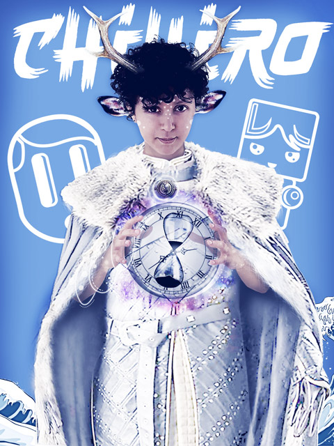
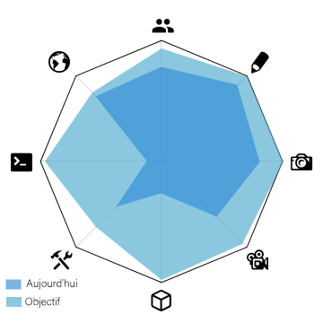

CHIHIRO
Sarah Smaallah
Descriptif:
Chihiro a le pouvoir de contrôler le temps, son nom fait d'ailleurs référence au célèbre manga "le Voyage de Chihiro", car d'un côté, c'est un peu tout ce qu'elle souhaite, fait un grand et long voyage à travers les époques pour ainsi en apprendre toujours plus sur le monde qui nous entoure sans le modifier.
Son apparence est due à une passion inexpliquée pour le Dieu-cerf dans "Princesse Mononoké", un être mystérieux et fascinant.
Pour résumer, Chihiro est une héroïne pacifiste en recherche constante de nouvelle idée créatrice, elle observe le monde en arrêtant le temps pour se laisser le temps d'apprécier l'instant.
